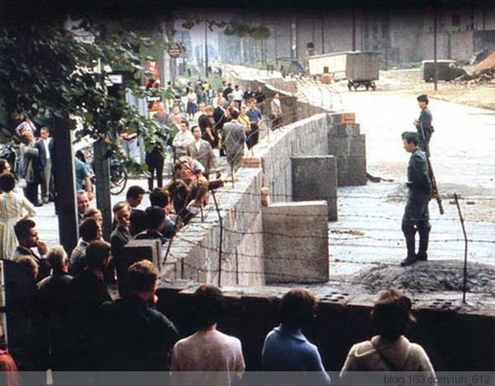

2013-08-13 813柏林墙的修建
目录
说起来真的特别巧，今天老师刚好给我们讲柏林这一个城市。说到柏林，大家肯定都能够想到柏林墙。而我们的今天学的课文中刚好有这样一句话：
13.August 1961: Ost-Berlin beginnt mit dem Mauerbau.
意思是：1961年8月13日，东德开始修建城墙。
今天是2013年8月13日，所以说已经到现在已经有52年的历史了。1989年柏林墙被拆除。
老师说柏林墙的修建是因为，大量的东德的人才跑到西德，东德为了阻止人才流失，从地理上将人才留住。

我开始从网上搜关于“柏林墙”的资料。发现，由于今天是纪念日，很多媒体都发了文章。
人民日报：1961年8月13日 “柏林墙”修筑
中国广播网：历史上的今天：中日淞沪会战开始 柏林墙动工修建
看看新闻网：历史上的今天: 1961年8月13日民主德国在东、西柏林间修筑“柏林墙”
我还看了一下百度百科：柏林墙，了解了柏林墙的来龙去脉以及人们为了穿过柏林墙带来的故事。
诚然，柏林墙为东德留住了人才，可是，墙不仅从地理上让东德和西德隔开，更使同一个国家的文化经济交流受到了阻碍，实在人民的心理上建了一道心墙。于是，东德更加落后，西德更加先进，到现在，这个状况也没有改变。
我常常觉得，“交流”是一个无比神奇的词。往大的方面说，地球的发展，包括人类社会的发展，无一不是靠“交流”。从小的方面说，我们学习一门技术，学习一门语言，学钓鱼，学游泳，学围棋，学开车，哪一种不是与我们学的对象进行交流呢？只有有了交流的基础，我们才能掌握这种技术。
所以，如果隔阂不可避免产生，那么我不愿意让它长久产生。如果交流受到阻碍，请像德国人推翻柏林墙那样奋不顾身。